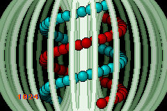
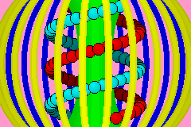
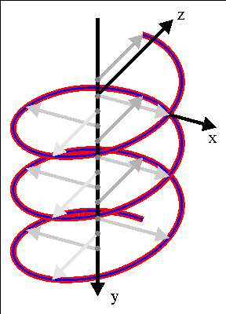
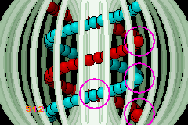

24. 实验室
实验室简介
Lab 代表“laboratory“（实验室），一个我摆弄新玩意的地方。如果我有某个可能有用、但还没完全准备好放到别处的新东西，我会先把它放在这里一阵子。这确实意味着这里有时会变得凌乱，但那没关系，因为实验室本来就是干这个的。作为副产品，“lab” 可能也双关“labyrinth“（迷宫），不过那只是个小小的额外彩蛋 :)。
优先级与绘制顺序
本节涵盖背景和对象控制中我尚未讨论的最后一点：优先级。有四个优先级等级，0-3，你可以在 REG_BGxCNT 的位 0 和 1 中设置背景的优先级，在 attribute 2 的位 10 和 11 中设置对象的优先级。优先级的概念很简单：优先级越高越先渲染，所以它们在优先级更低的东西后面。这会让你能让对象位于背景之后，例如。
这一切听起来非常简单，也确实如此，但渲染过程的顺序比这还要多一点内容。一方面你有优先级设置，另一方面你有 obj 和 bg 的编号。对象编号为 0 到 127，背景为 0 到 3。同样，编号越大越靠后：在一堆对象中，obj 0 在最上面；bg 0 覆盖其他背景，且对象绘制在背景前面。这不是由于优先级设置；实际上，优先级的全部意义就在于可以改变默认顺序。
以上对于同一优先级的对象和背景是成立的。你可以说最终的 obj/bg 顺序是由优先级和 obj/bg 编号共同组成的，其中优先级是最高有效部分。所以举个例子，如果你有优先级 0 的 obj 1 和 bg 2，以及优先级 1 的 obj 0 和 bg 1，顺序将是 obj1（prio0）、bg2（prio0）、obj0（prio1）、bg1（prio1）。
嗯，大体上……
对象优先级 bug 与对象排序
在大多数情况下，顺序如上所述，除了 obj 0 和 obj 1 重叠的部分。由于一个，嗯，我想你可以称之为设计缺陷，顺序 = 优先级.编号 这个概念并不完全成立：如果你有两个对象，其优先级和编号不对称，并且中间有一个背景，那么本应在背景之下的那个对象会在两个对象重叠的区域“穿透“背景显现出来。这听起来非常复杂，但那只是因为文字无法真正捕捉发生了什么。基本上，类似 obj1+prio0、bg0+prio0、obj0+prio1 这样的情况，如果这些对象的矩形重叠，就会产生相当难看的图形瑕疵。然而，obj0+prio0、bg0+prio0、obj1+prio1 会正常工作，因为对象编号现在与优先级一致了。
这就引出了对象排序：确保本应排第一的对象确实是第一，即拥有更小的 obj 编号。这其实是与优先级独立的问题，但一次性把它们都做了很好。原则上，对象排序就像任何排序一样：你有一个事物的数组或列表，这里是 OBJ_ATTR，而且你必须通过某种键——一个指示排序顺序应该是什么的值——把它们排好序。
现在，键基本上可以是任何东西。许多俯视或等距游戏使用 Y 排序，因为更高的 Y 值意味着对象更靠前。3D 和 mode 7 游戏可以使用 Z 排序，而 Y 排序在技术上它是它的一个特例。
你还需要一个排序算法。有大量算法可供选择，见排序算法 wiki。选择算法时，请记住这里要排序的项数顶多大约一百个，而且这些项的顺序可能并不常变。最后，你需要一种把整个东西组合起来的方法；让它能与你拥有的精灵和 OBJ_ATTR 结构体配合工作。
目前，我主要选择了简单，而非速度。这个排序器 id_sort_shell() 使用了 Numerical Recipes（第 8 章，第 321 页）中 Shell 排序 算法的一个略作修改的版本。它的参数是一个键值数组和元素个数。不过，它并不直接排序这些（那会相当无意义，因为它们在这里没有绑定到对象），而是把排序结果保存在一个索引表 ids[] 中。
索引表嘛，显然就是一张索引的表；它会在例程结束后提供键的排序顺序。这个策略让我能保持对象双缓冲完好无损，我喜欢这样，因为它让精灵管理更简单。而且，我不必交换整个结构体（尽管那通常是通过指针完成的），还让这个例程能作为通用排序器使用，而不仅仅是用于对象。选择字节作为索引表的类型确实限制了它，但那只是有时必须做的空间取舍之一。当然，把它改成用完整整数并非难事。
// sort routine (in IWRAM!)
//! Sort indices via shell sort
/*! \param keys Array of sort keys
\param ids Array of indices. After completion keys[ids[ii]]
will be sorted in ascending order.
\param number of entries.
*/
IWRAM_CODE void id_sort_shell(int keys[], u8 ids[], int count)
{
u32 ii, inc;
// find initial 'inc' in sequence x[i+1]= 3*x[i]+1 ; x[1]=1
for(inc=1; inc<=count; inc++)
inc *= 3;
// actual sort
do
{
// division is done by reciprocal multiplication. So no worries.
inc /= 3; // for ARM compile
// inc = (inc*0x5556)>>16); // for Thumb compile
for(ii=inc; ii<count; ii++)
{
u32 jj, id0= ids[ii];
int key0= keys[id0]
for(jj=ii; jj>=inc && keys[ids[jj-inc]]>key0; jj -= inc)
ids[jj]= ids[jj-inc];
ids[jj]= id0;
}
} while(inc > 1);
}
// example of use
IWRAM_CODE void id_sort_shell(int keys[], u8 ids[], int count);
int sort_keys[SPR_COUNT]; // sort keys
u8 sort_ids[SPR_COUNT]; // sorted OAM indices
void foo()
{
int ii;
for(ii=0; ii<SPR_COUNT; ii++)
{
// setup sort keys ... somehow
sort_keys[ii]= ... ;
}
// sort the indices
id_sort_shell(sort_keys, sort_ids, SPR_COUNT);
// custom object update
for(ii=0; ii<SPR_COUNT; ii++)
oam_mem[ii]= obj_buffer[sort_ids[ii]];
}
注意我有意让这个例程位于 IWRAM（并编译为 ARM 代码），因为它实在慢得要命！或者也许我不该说慢，只是代价高。
想想一个基础排序是如何工作的。你有 N 个元素要排序。原则上，其中每一个都要与其他每一个比较，所以这个例程的速度正比于 N2，通常记作 O(N2)，其中 O 代表数量级。对于排序，O(N2) 是糟糕的。例如，当 N=128 时，你要面对 16k 次比较。再乘以实际比较和更新所花的周期数。不愉快。
幸运的是，有更快的方法，你会想要至少 O(N·log2(N)) 的排序算法，而且正如从上述 wiki 看到的，有很多这样的算法，shellsort 就是其中之一。不幸的是，即便这个也可能相当昂贵。同样，当 N=128 时这仍然大约是 900，而且你可以肯定乘数可能很高，比如 80+。用 ARM+IWRAM，我能把它降到 20-30，而一次简单的汇编练习给了我一个可接受的 13 到 22 × N·log2(N)。
大 O 记号
“大 O“或数量级记号是比较算法的一个有用表达。记号是 O( f(N) )，其中 N 是要处理的元素个数，f(N) 是一个函数，通常是幂和对数的组合。它展示了一个算法的运行时间如何随 N 增大而上升。由于低阶函数最终会被高阶函数超过，前者通常更可取。
不过，这里的关键词是“最终“。它没说明算法的规模，而规模因情况而异。在某些情况下，如果 N 足够低且规模差异足够大，一个高阶例程实际上可能胜过一个低阶例程。
现在，我得承认第一个承认当前设计本身并不完全是优化的。用链表代替索引表可能更快，还有其他事情也是（除法不是问题，因为它可以伪造）。然而，那样它就不会像现在这样简单了，而这正是我在这里所追求的。
一旦 id_sort_shell() 完成，我们就有一张排列好的索引表，使得 obj_buffer[sort_ids[ii]] 给出排序后的 OAM 项，它被用来更新真实的 OAM。
笼中 DNA
本节的演示大概是目前最酷也最复杂的一个。它展示了一个由对象组成的双螺旋，环绕着一个环面笼子的中心旋转（见 24.1）。这里用了全部四个背景，一个用于文字（文字少得可怜），以及笼子的三部分：一个遮住对象的前端面，一个位于其他一切之后的后端，以及对象环绕其旋转的环面中部，即它们会在不同时刻从它前面和后面经过。然后是构成螺旋的那些对象。两条链各由 48 个球形 16x16 对象组成。这两条链通过颜色区分：一条是红色，另一条是青色。当它们经过中心平面之后时，会变成暗红和暗青。优先级设置用于让对象能经过更近的背景之后，而优先级和排序让对象顺序平滑，并避免前述的 obj-bg-obj bug。总结一下：
- 4 个具有不同优先级设置的背景
- 96 个环绕（在 3D 中）中心柱旋转的对象。
- 对象优先级和编号排序以确保正确顺序。
- 调色板交换以区分近处与远处的对象。
你可以在 fig 24.1b 中看到一个整体的示意图；table 24.1 解释了颜色。
|
 Fig 24.1a (左)： 优先级与精灵顺序演示。 |
 Fig 24.1b： 24.1a 的示意图。 |
| 颜色 | 描述 | obj/bg | 优先级 |
|---|---|---|---|
| 黄色 | 近处笼子 | bg1 | prio0 |
| 绿色 | 笼子中部 | bg2 | prio1 |
| 蓝色 | 远处笼子 | bg3 | prio2 |
| 红色 | 链 1 | obj_buffer[00..47] | var |
| 青色 | 链 2 | obj_buffer[48..95] | var |
| 浅红/青 | 近处球 | OAM[0..47] | prio 1 |
| 暗红/青 | 远处球 | OAM[48..95] | prio 2 |
精灵与螺旋图案
你可以想象，精灵部分是这个演示最棘手的东西。螺旋本质上是一条三维路径，所以我们需要为每个球的位置准备一个 3D 向量，坐标当然是定点数。它还需要一个到 OAM 影子缓冲的索引，把一个精灵（球）链接到正确的 OBJ_ATTR（屏幕上的对象）。
typedef struct tagSPR_BASE
{
VECTOR pos; // position (x, y, z)
int id; // oe-id in OAM buffer
} SPR_BASE;
#define SPR_COUNT 96
SPR_BASE sprites[SPR_COUNT]; // Sprite list

Fig 24.2: 螺旋的 3 个周期。
螺旋只是一个圆参数化沿其法线轴方向挤出（见 fig 24.2）。注意三个主轴的方向：这是一个右手坐标系，x 和 y 遵循屏幕轴的方向，z 指向屏幕内部。一个绕 y 轴旋转的螺旋可以用下面的关系描述：
| (24.1) |
A 是螺旋的半径，k 是波数（k=2π/λ），ω 是角速度（ω=2π/T）。波数定义了螺旋各层之间的间距（即螺距），角速度给出旋转速度。注意，要创建 fig 24.2 中的螺旋，我其实需要一个负的波数，但那现在并不重要。
在实际代码中，我要对上述公式做一个小小的改动，让 ω 可变而不扰乱整个螺旋。我用它的积分作为初始相位角：φ0=∫ω(t)dt，而不是简单地 ωt。φ0 将是创建螺旋函数的参数，并在别处管理。图案的另一个参数是 p0，螺旋的参考点。你总得有一个这样的点。
// some constants
const VECTOR P_ORG= { 112<<8, 0<<8, 0<<8 };
#define AMP 0x3800 // amplitude (.8)
#define WAVEN -0x002C // wave number (.12)
#define OMEGA0 0x0200 // angular velocity (.8)
// phi0(t) = INT(w(t'), t', 0, t)
// (x,y,z) = ( x0+A*cos(k*y+ft), y0+y, z0+A*sin(k*y+phi0) )
void spr_helix(const VECTOR *p0, int phi0)
{
int ii, phi;
VECTOR dp= {0, 0, 0};
SPR_BASE *sprL= sprites, *sprR= &sprites[SPR_COUNT/2];
for(ii=0; ii<SPR_COUNT/2; ii++)
{
// phi: 0.9f ; dp: 0.8f ; WAVEN:0.12f ; phi0: 0.8f
phi= (WAVEN*dp.y>>11) + (phi0>>7);
// red helix
dp.x= AMP*lut_cos(phi)>>8;
dp.z= AMP*lut_sin(phi)>>8;
vec_add(&sprL[ii].pos, p0, &dp);
// cyan helix
dp.x= -dp.x;
dp.z= -dp.z;
vec_add(&sprR[ii].pos, p0, &dp);
dp.y += 144*256/(SPR_COUNT/2);
}
}
这个例程相当直接。y 的运行计数器以 dp.y 的形式保存，它被用来计算完整相位，从中我们得到正弦和余弦。由于红色和青色螺旋是反相的，我可以简单地通过切换另一个的符号来得到其中一个的 x 和 z 偏移。唯一真正棘手的部分是管理相位的不同定点标度；在处理定点数数学时，始终标明小数位数，在那里太容易迷路了。
现在我们已经有了双螺旋图案，我们需要一种方法把它链接到对象上，包括排序和一切。
void spr_update()
{
int ii, prio, zz, *key;
u32 attr2;
int *key= sort_keys;
SPR_BASE *spr= sprites;
OBJ_ATTR *oe;
for(ii=0; ii<SPR_COUNT; ii++)
{
oe= &obj_buffer[spr->id];
// set x/y pos
obj_set_pos(oe, spr->pos.x>>8, spr->pos.y>>8);
// set priority based on depth.
// HAX 1: palette swapping
attr2= oe->attr2 & ~(ATTR2_PRIO_MASK | (1<<ATTR2_PALBANK_SHIFT));
zz= spr->pos.z;
if(zz>0)
{
prio= 2;
attr2 |= 1<<ATTR2_PALBANK_SHIFT;
}
else
prio= 1;
oe->attr2= attr2 | (prio<<ATTR2_PRIO_SHIFT);
// HAX 2: sort-key contruction
*key++= (prio<<30) + (zz>>2) - 6<<28;
spr++;
}
if(g_state & S_SORT) // sort and update
{
id_sort_shell(sort_keys, sort_ids, SPR_COUNT);
for(ii=0; ii<SPR_COUNT; ii++)
oam_mem[ii]= obj_buffer[sort_ids[ii]];
}
else // regular update
oam_update(0, SPR_COUNT);
}
这里的大循环更新的是 OAM 影子缓冲，不是真实的 OAM！它用精灵的 x 和 y（当然针对定点数做了修正）更新对象的位置，并用 z 设置优先级：如果在近侧（中心柱之前）则为 1，如果在远侧（柱之后）则为 2。它还对调色板做了些古怪的事，那是函数里的第一个 hack，紧接着很快就是第二个。
| 组 | 颜色 |
|---|---|
| 4 | 浅红 |
| 5 | 暗红 |
| 6 | 浅青 |
| 7 | 暗青 |
Hack 1。我把对象调色板安排成这样：红色在调色板组 4 和 5，青色在组 6 和 7（table 24.2）。这意味着我可以通过切换第一个调色板组位，即 attr2 位 12，在浅色和深色版本之间切换。
紧接其后的是第二个 hack，创建排序键。
Hack 2。排序键是优先级（2 位）和深度 z（其余部分）的组合。zz 的低 30 位作为优先级等级的有符号偏移，这样每个优先级都有自己的深度范围 [-2<<30,2<<30⟩，如果需要的话。问题是键也是有符号的，这意味着优先级 2 和 3 会被算作负数，从而被排在 prio 0 和 1 之前，那就糟了。为补救这一点，我减去 0x60000000，把优先级 0 的范围移到它本应在的最负的范围内。
函数的最后一部分把 OAM 影子缓冲更新到 OAM，可以带排序也可以不带。
排序被禁用的对象
顺便说一句，你可以轻松修改排序键的创建来顾及被禁用/隐藏的对象。你只需给排序键赋最高的（有符号）值，此例中为 0x7FFFFFFF。
if( (oe->attr0&ATTR0_MODE_MASK) != ATTR0_HIDE )
*key++= (prio<<30) + (zz>>2) - 6<<28;
else
*key++= 0x7FFFFFFF;
其余代码
其余代码就只是 main() 和初始化代码。大部分初始化代码是相当标准的东西：载入图形、寄存器初始化等等。唯一有趣的部分是对象初始化，它为红色和青色的球把调色板组设为 0x4000 和 0x6000。而且因为排序用的是索引表而非直接改变对象缓冲区本身，这就是我为了一直保持原色正确所需要做的全部。
#define S_AUTO 0x0001
#define S_SORT 0x0002
const VECTOR P_ORG= { 112<<8, 0<<8, 0<<8 };
int g_phi= 0; // phase, integration of omega over time
int g_omega= OMEGA0; // rotation velocity (.8)
u32 g_state= S_AUTO | S_SORT; // state switches
void main_init()
{
int ii;
// --- init gfx ---
// bgs
memcpy32(pal_bg_mem, cagePal, cagePalLen/4);
pal_bg_mem[0]= CLR_BLACK;
memcpy32(tile_mem[1], cageTiles, cageTilesLen/4);
// Hacx 3: there are 3 maps in cageMap, which have to be extracted manually
// front part, priority 0
memcpy32(se_mem[5], &cageMap[ 1*32], 20*32/2);
REG_BG1CNT= BG_CBB(1) | BG_SBB(5) | BG_8BPP | BG_PRIO(0);
// center, priority 1
memcpy32(se_mem[6], &cageMap[22*32], 20*32/2);
REG_BG2CNT= BG_CBB(1) | BG_SBB(6) | BG_8BPP | BG_PRIO(1);
// back, priority 2
memcpy32(se_mem[7], &cageMap[43*32], 20*32/2);
REG_BG3CNT= BG_CBB(1) | BG_SBB(7) | BG_8BPP | BG_PRIO(2);
// object
memcpy32(&tile_mem[4][1], ballTiles, ballTilesLen/4);
memcpy32(pal_obj_mem, ballPal, ballPalLen/4);
// -- init vars ---
// init sort list
for(ii=0; ii<SPR_COUNT; ii++)
sprites[ii].id= sort_ids[ii]= ii;
// --- init sprites and objects ---
oam_init();
for(ii=0; ii<SPR_COUNT/2; ii++)
{
obj_set_attr(&obj_buffer[ii], 0, ATTR1_SIZE_16, 0x4001);
obj_set_attr(&obj_buffer[ii+SPR_COUNT/2], 0,
ATTR1_SIZE_16, 0x6001);
}
spr_helix(&P_ORG, 0);
spr_update();
REG_DISPCNT= DCNT_BG_MASK | DCNT_OBJ | DCNT_OBJ_1D;
int_init();
int_enable_ex(II_VBLANK, NULL);
txt_init_std();
txt_init_se(0, BG_CBB(3)|BG_SBB(31), 0, 0xEC00021F, 0xEE);
}
int main()
{
char str[32];
main_init();
while(1)
{
VBlankIntrWait();
// kery handling
key_poll();
if(key_hit(KEY_START))
g_state ^= S_AUTO;
if(key_hit(KEY_SELECT))
g_state ^= S_SORT;
// movement
if(g_state & S_AUTO)
{
g_omega += key_tri_shoulder()<<4;
g_phi += g_omega;
}
else
g_phi += g_omega*key_tri_shoulder();
// sprite/obj update
spr_helix(&P_ORG, g_phi);
spr_update();
// print omega
siprintf(str, "%6d", g_omega);
se_puts(8, 136, str, 0);
}
return 0;
}

Fig 24.3: 排序已关闭。
主循环检查状态变化、推进并更新精灵和对象，并打印当前的角速度。
g_state 中有两个状态开关，一个切换排序过程（S_SORT，用 Select 键），一个设置旋转是否为自动（S_AUTO，用 Start 键）。切换排序很有意思，因为你能看到如果只设置优先级会发生什么。这有两个效果（见 fig 24.3）：首先，每条链中的球顺序会被固定，每个对象都会部分遮挡它左边的那一个，这对于链中后退的部分是不正确的。这在最右侧最明显，那里链看起来是断裂的。第二个效果是对象优先级/编号顺序 bug，即更深的对象会穿透本应遮挡它的背景显示出来。
Start 键在自动和手动旋转之间切换。在自动模式下，你可以用 L 和 R 键改变 ω。在手动模式下，L 和 R 用当前角速度更新相位。把速度设得真的很低，你可以更细致地观察发生了什么。例如，你可以清楚地看到处于垂直中心线的对象位于它左右邻居的前面，正是人们所预期的。除非排序被关掉，那就是了。
到此为止关于优先级和对象排序的话题就结束了。请记住，对象和背景的优先级并非决定渲染顺序的唯一因素，obj 或 bg 编号对每个优先级等级也很重要。一旦你开始混合对象和背景优先级，请确保对象编号遵循与它们的优先级相同的顺序，而这通常意味着对象排序。
我讨论了一种简单而灵活的排序方法，但我警告你它确实费时。如果它够好，尽管用。如果不够，更快的方法肯定能造出来。链表、范围检查、手工汇编（例如见 prio_demo 目录中的 id_sort_shell2.s）都能帮助它更快。但最终的实现将取决于你。